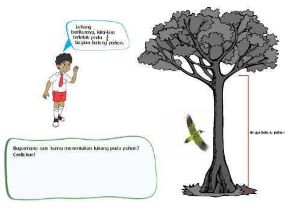
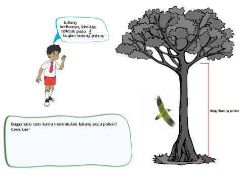

Pecahan
Setelah selesai mengamati hewan di taman, Edo menuju ke halaman belakang untuk mengamati burung. Salah satu burung yang sering hinggap di pohon adalah burung pelatuk. Burung ini mempunyai kebiasaan membuat lubang pada pohon tersebut ketika lapar. Dari pengamatan Edo, terdapat beberapa lubang pada pohon tersebut. Berikut adalah informasi dari Edo tentang lubang-lubang yang terdapat pada pohon. Bantulah Edo menggambar lubang sesuai yang disampaikan Edo.
 

Edo mempunyai halaman rumah yang luas. Halaman tersebut ditumbuhi pohon-pohon yang sangat rindang. Udara di sekitar rumah terasa sejuk. Ibu Edo juga mempunyai kebiasaan menanam bunga beraneka warna di halaman rumah. Suasana rumah Edo terlihat sangat hijau sehingga membuat berbagai burung dan serangga datang ke sana.